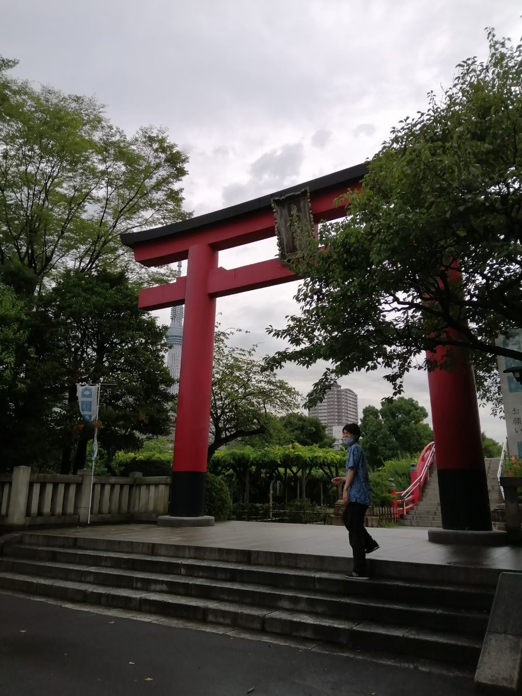
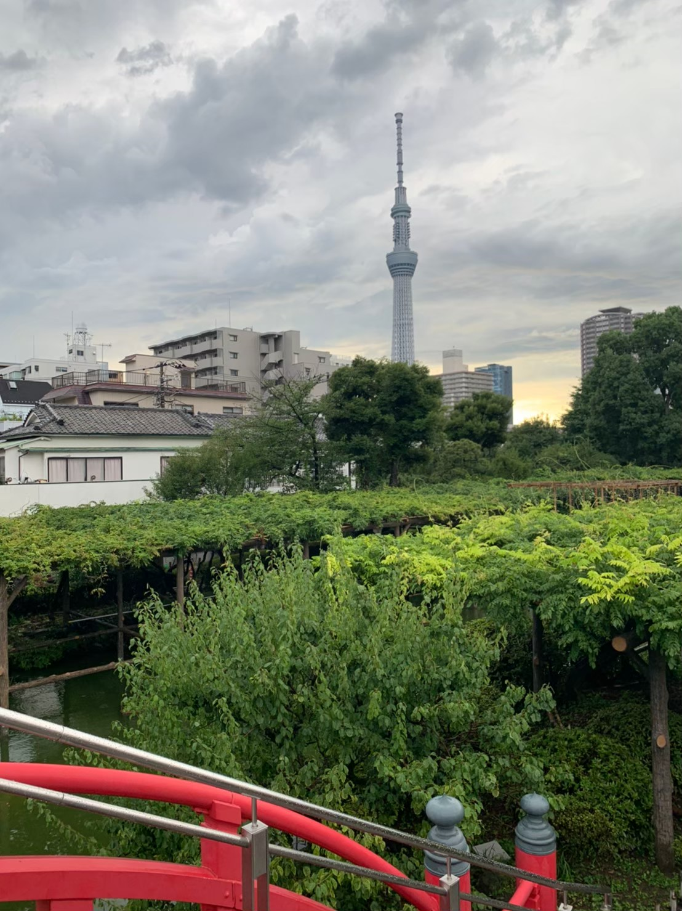

錦糸町・亀戸散歩
～亀戸天神社～
--/-- 2021
カテゴリー：通常散歩
今回は東京の下町『亀戸』近辺を散歩してきました。
東京都江東区亀戸にある亀戸天神社は学問の神としても有名な場所です。受験生も多く訪れる場所であり、
公務員試験や各種資格試験を受験する大学生にも親しまれている由緒正しき神社です。
『法政大学に合格できますように』といった絵馬があったら嬉しいなと思ったのですが、ありませんでした。悲しい。あったとしても『早稲田大学 ○○学部 合格』の下に申し訳ない程度に「法政大学 合格」と書いてあるだけ。ある意味伸びしろがある大学ってことですかね？
亀戸天神社にある鳥居 スカイツリーと綺麗に採れるかと思っていたんですが、いい感じに撮れませんでした。まあそうゆうときもありますよね。
亀戸天神社 藤棚 から見えたスカイツリー  丁度雨上がりであったので、綺麗にスカイツリーと藤棚を撮影することができませんでした。もう少しカメラの技術を高めなくてはいけないと反省してます。
繁華街へ行くのもそれはそれで楽しいのですが、意外と知らない東京の魅力を発見できた楽しい散歩になりました。東京には隠れスポットが沢山あると思うので、是非開拓したいものです！